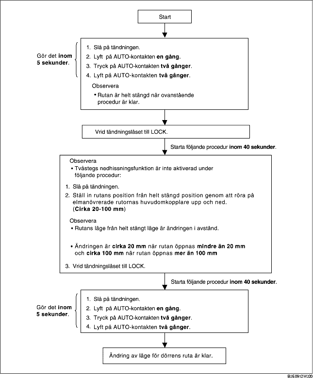

POSITIONSÄNDRINGAR FÖR FRAMDÖRRENS RUTA
B3E091266350W03
-
Observera
-
• Kontrollera att tvåstegs-nedhissningsfunktionen fungerar normalt och att rutans position har ändrats efter följande åtgärd. Om tvåstegs-nedhissningsfunktionen inte fungerar eller om rutans position inte ändras, utfördes inte åtgärderna korrekt. Upprepa arbetsgången från början.
